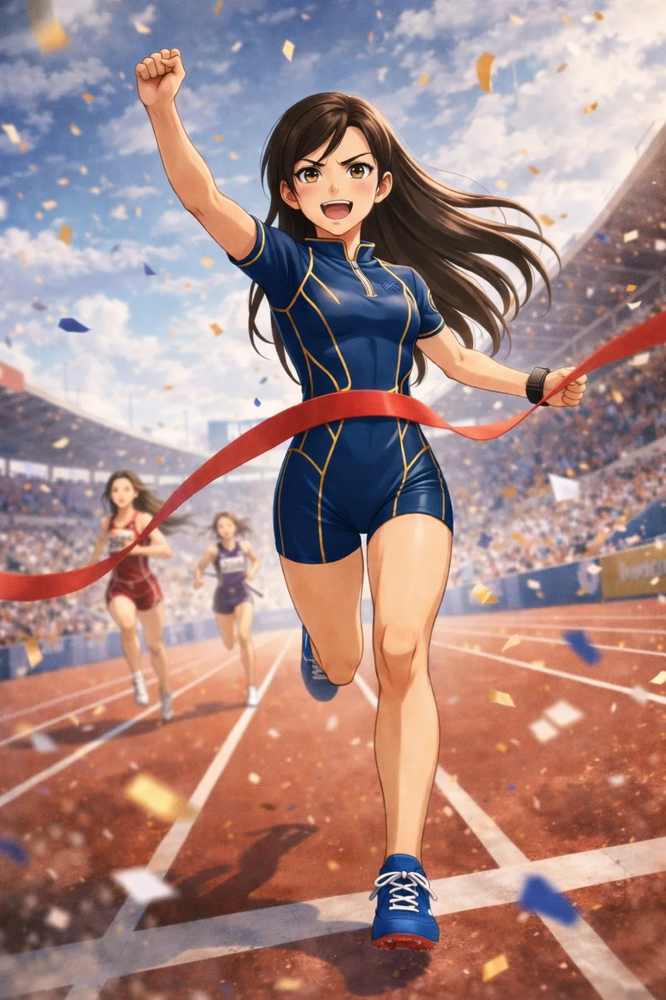

CHARACTER FILE

ラピッドストライク
Rapid Strike
『疾風迅雷、一閃の勝負師』
基本情報
- 年齢
- 18歳
- 体格
- 164cm・シャープで俊敏なアスリート型体型
特性
【瞬速反応】相手のわずかな視線の揺れや重心移動すら見逃さず、超常的な初動反応で先を奪う特性。踏み込みと同時に死角へ滑り込むその動きは、まるで一瞬だけ姿が消えたかのように映る。
超必殺技
【ライトニングアーチャー（Lightning Archer）】クラウチングの構えから一気に爆発するように踏み込み、相手が反応するより先に間合いを奪う超高速の突撃技。最後はテニスのスマッシュを思わせる豪快な軌道のフックを叩き込み、一瞬で勝負を決める。
性格
クールな眼差しとストイックな精神を併せ持つ俊敏系ファイター。冷静沈着に勝負の流れを読み取り、最短ルートで勝利を掴むプロフェッショナル。
ファイトスタイル
スピード特化型・奇襲＆フィニッシュ型。死角への高速移動とカウンター主体の必殺スタイル。
相性
- 有利な相手
- パワー偏重型・直線型ファイター
- 不利な相手
- 極端なフェイント型・持久型ファイター
プロフィール
疾風迅雷の一撃──ラピッドストライク。陸上100m全国チャンピオン、そしてテニスのインターハイ優勝という異色の経歴を持つ、最速のフィニッシャー。“反応”と“加速”に特化した戦いで、相手の初動すら見逃さない。「おっそ！ねむくなっちゃう」とニヤつきながら、わずか一瞬で試合を終わらせる。超必殺技「ライトニングアーチャー」が放たれる時、観客の視界から彼女の姿は消える。その一閃が、勝利の訪れを告げる。
口癖
「おっそ！ねむくなっちゃう」